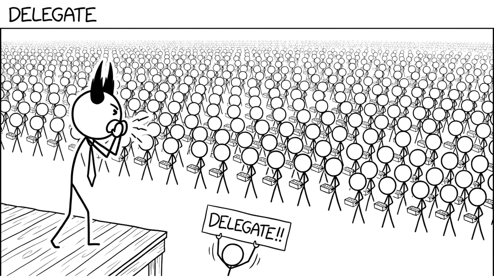

<section id="cap-delegate" data-transition="fade" style="display:flex; align-items:center; justify-content:center; padding:0; background:#fcfcfa">

<p style="position:absolute;left:0;bottom:10px;width:1920px;margin:0;text-align:center;font-family:'Patrick Hand', 'Trebuchet MS', sans-serif;font-size:22px;color:#8a8f98">Copyright Dobromir Montauk 2026</p>
<aside><b>Delegate.</b> At some point your own hours are the bottleneck. Delegating is how one manager's capacity becomes several.<br>- Tech leads who own the technical calls, so design decisions don't queue behind you.<br>- A second-in-command who can run the team for two weeks while you're out, and actually does it.<br>- Hand off whole problems (the release process, the on-call rotation), not tasks.<br>- Let them do it differently than you would. If it's 80% as good and you didn't have to do it, that's a win.<br>The test: if you disappear for a week, does the team slow down?</aside>
</section>
